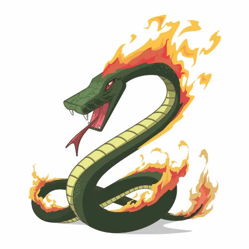

o Boitatá é uma gigantesca cobra-de-fogo, que assim como o Cobra-Grande é um terror que viva nas águas.É o guardião do campo servindo sob a Jaci (deusa geral dos vegetaes), se transformar também numa tora em brasa, queimando aqueles que põem fogo nas campos, matas e florestas
A origem deste mito está ligada a um fenômeno chamado fogo-fátuo. A decomposição de matéria orgânica, seja de vegetação ou animais mortos, libera gases que inflamam-se espontaneamente em contato com ar. Correntes de ar causadas pela passagem de uma pessoa nas proximidades podem deslocar as chamas fazendo com que pareçam uma cobra de fogo que a persegue.
voltar para início